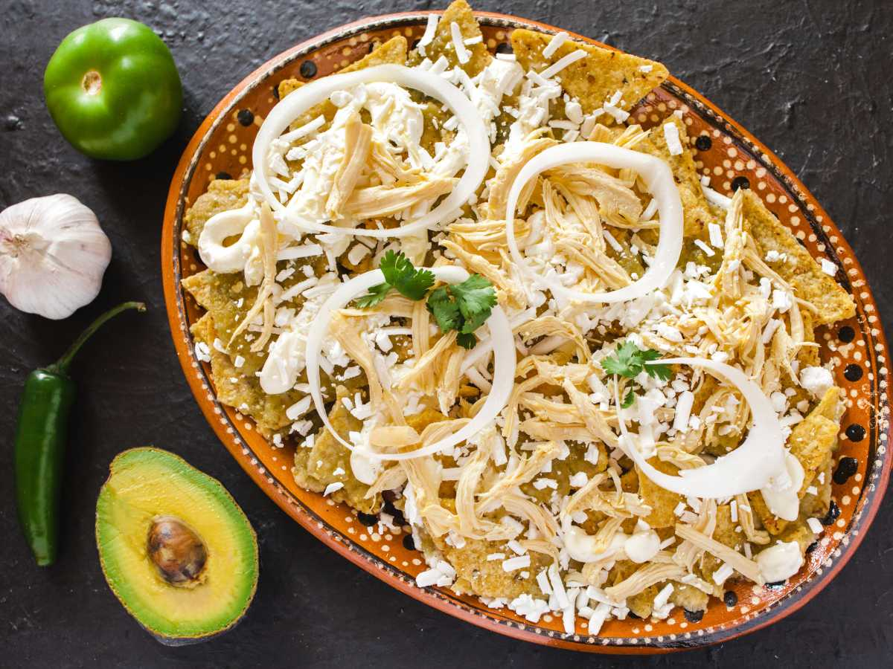

Machacado con huevo
Carne seca machacada guisada con huevo, frijoles y tortillas de harina.
$95
Restaurante Sabor Casero ofrece comida tradicional mexicana con buen sabor, precios accesibles y un ambiente familiar, buscando que nuestros clientes se sientan como en casa.
Conoce nuestro menú Carne seca machacada guisada con huevo, frijoles y tortillas de harina.
$95

Pozole verde con pollo, maíz y salsa de chile verde.
$150

Totopos bañados en salsa verde, acompañados de queso, crema, pollo y cebolla.
$135

Tortillas de maíz con carne de cerdo al pastor, piña, cebolla y cilantro. Orden de 5.
$80
Desliza para ver más platillos →